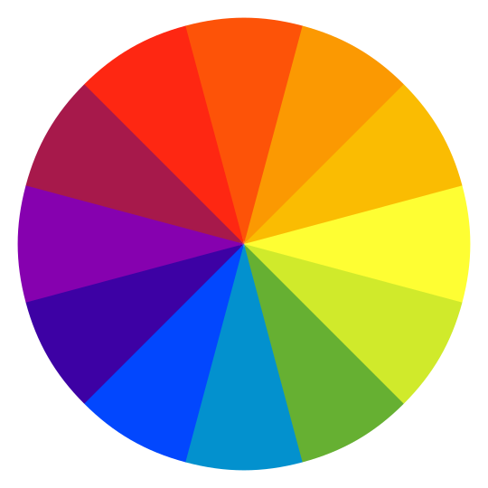

Summary. Each pixel is analogous to a biological cell. It decides its own color and communicates with its immediate neighbors. The goal of the cell population as a whole is to come to an agreement about what their global shape represents. The goal of the adversaries is to steer the classification towards an "8", regardless of the actual shape.
Usage. Interact with the cells by clicking or tapping on the canvas above. Press different digits to load or resample them. Press the bin to clear the canvas. Toggle the Draw Adversary box to draw adversaries as opposed to the original CAs. Adversaries can be drawn surgically (one pixel at a time).

Speed:
( step/s)
Remove
adversaries
adversaries
Clear

This article relies on using color to demonstrate classification label. If you have trouble distinguishing the colours of digits in the above legend, please try and adjust the slider above to see if there is an alternative colour palette for you. The chosen palette will propagate throughout the article.